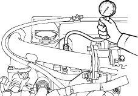

Special Tool Required
Adapter compression pressure 5-8840-9048-0
- Start the engine and allow it to run for several minutes to warm it up.
- Stop the engine and remove the connector on the injectors.
- Remove all of the glow plugs from the engine.
- Set a compression gauge to the No. 1 cylinder glow plug hole (5-8840-9048-0 Adapter for compression gauge).

- Turn the engine over with the starter motor and take the compression gauge reading.
Measure the compression pressure of all cylinders.
Compression pressure MPa at 200 min-1
Standard:
2.8 MPa (28.6 kg/cm2, 406 psi)
Limit:
2.5 MPa (25.5 kg/cm2, 363 psi)
Special Tool Required
Valve compressor for intake 5-8840-9046-0, for exhaust 5-8840-9047-0
NOTE: The valve clearances are checked on a cold engine condition.
Inspection
- Remove the drive belt (see page 4-20).
- Disconnect the connectors (A), (B) from top of the injector.

- Remove the leak off hose (C) from the injectors.
- Remove the injection pipes (A).
- Use the vinyl tape (or something similar) to seal the fuel delivery ports to prevent entry of foreign materials.